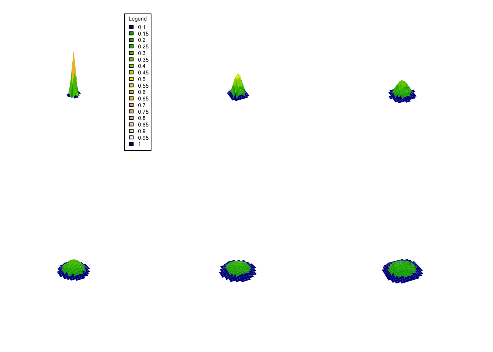
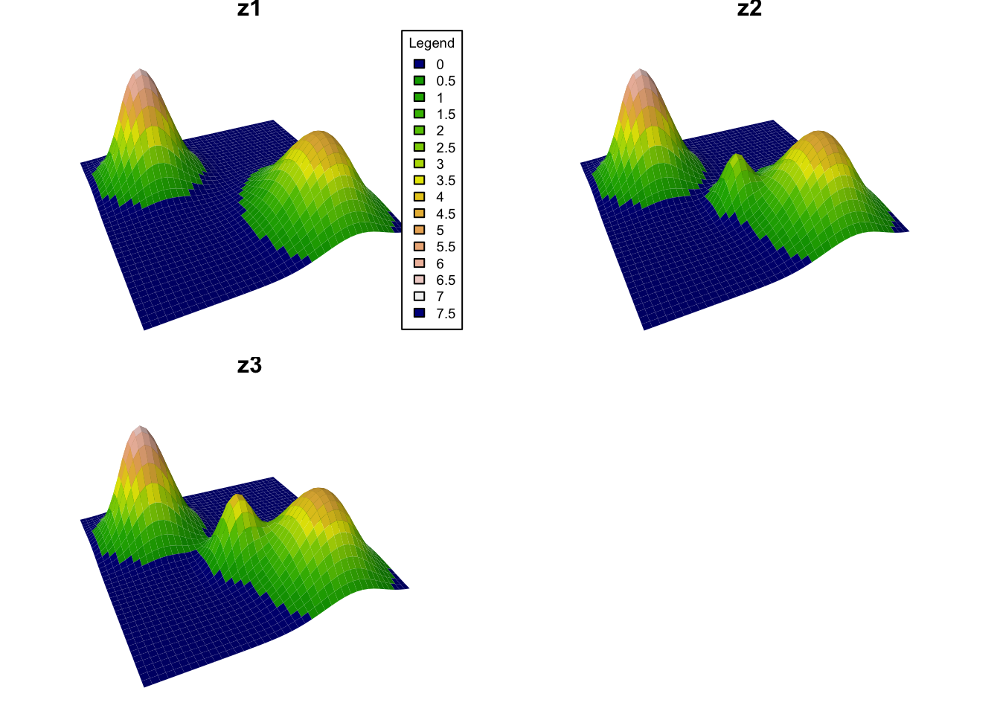
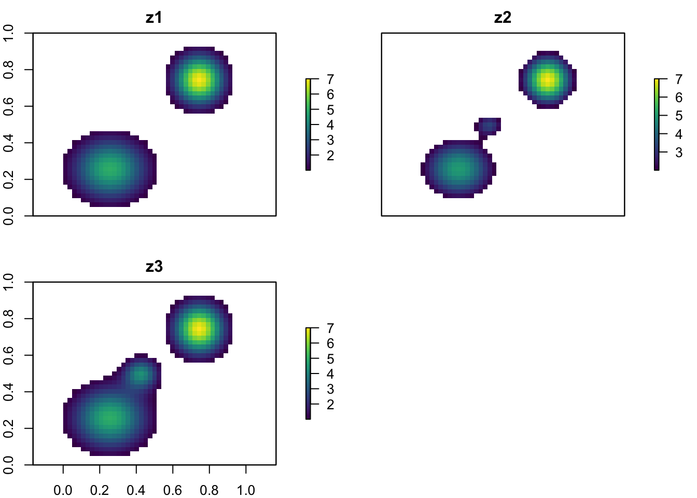
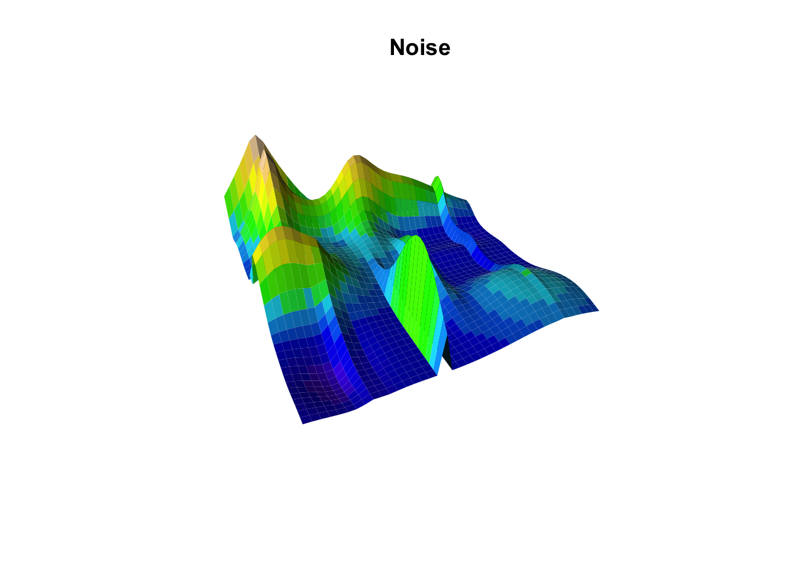
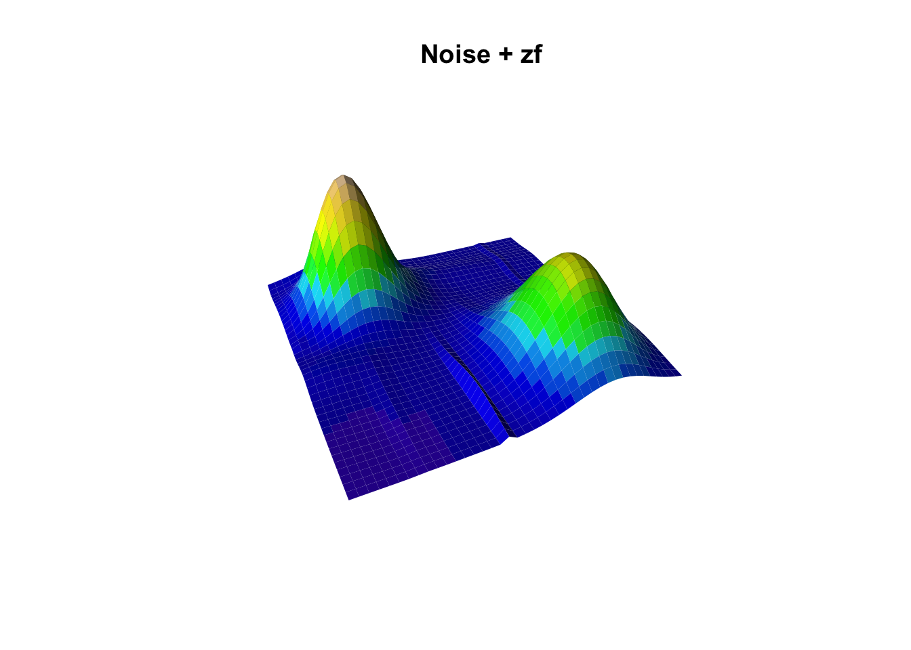
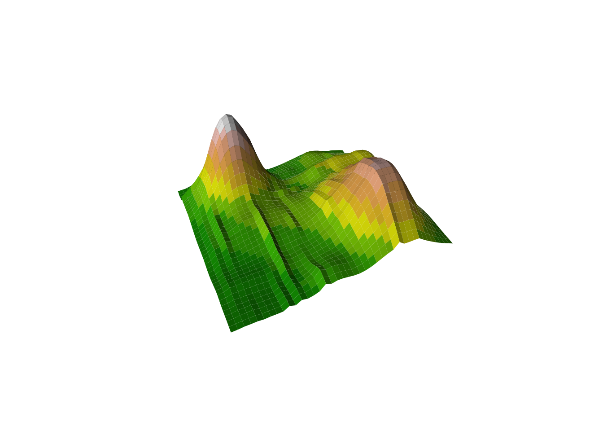
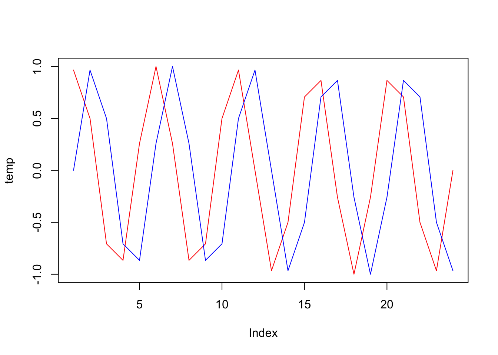

Welcome, brave explorer of virtual worlds! Today, you’ll learn how to create entire landscapes (no pressure!) using R. We’ll shrink the universe to an experimental size, start with one island and gradually add more complexity; from rugosity to temperature, and even sea level changes.
In this tutorial, we will:
Create a spatial grid (our world map).
Add random elevation and temperature (because flat worlds are boring).
Visualize your masterpiece (watch your creation come to life).
Modify the shape and dynamics of your island (why stop here?).
Prepare your world for Gen3sis (ready for simulation?).
Run a simulation (let there be life!).
Step 1: Setup (Gather Your Tools)
Before we build our world, let’s make sure we have the right tools. No one builds a universe without a hammer… and a bunch of other R-packages.
# Load the necessary libraries for plotting and data wranglinglib <-c("terra", "raster", "lattice", "rayimage", "viridis", "gen3sis", "ggplot2", "persp", "here")sapply(lib, require, character.only =TRUE, quietly =TRUE, warn.conflicts =TRUE)
terra raster lattice rayimage viridis gen3sis ggplot2 persp
TRUE TRUE TRUE FALSE TRUE TRUE TRUE FALSE
here
TRUE
Step 2: Declare your functions (Make your tools)
Now that our libraries are ready, we need tools to help us generate the world. Below are custom functions to plot the terrain (plot_persp), simulate shape (drop and gaussian_2d), and generate random landscapes (random_landscape). These functions allow us to manipulate and visualize spatial grids with elevation data.
plot_persp <-function(x, y, z, lcol=topo.colors, ...) { zz <- (z[-1,-1] + z[-1,-ncol(z)] + z[-nrow(z),-1] + z[-nrow(z),-ncol(z)])/4 breaks <-hist(zz, plot=FALSE)$breaks cols <-lcol(length(breaks)-1) zzz <-cut(zz, breaks=breaks, labels=cols)persp(x, y, z, col=as.character(zzz),phi=30, theta=-25, ltheta =-70,expand =0.5, border =NA, box =FALSE, shade =0.75, ...)# list(breaks=breaks)}# 'shapedrop <-function(x,y, a=3, ...) { r <-sqrt(x^2+y^2)# avoid zero division r[r==0] <-1 z <- a *sin(r)/r }gaussian_2d <-function(x,y, x0, y0, sdx, sdy, a) { r <- (((x-x0)^2)/(2*sdx^2))+(((y-y0)^2)/(2*sdy^2)) z <- a*exp(-r)return(z)}# 'generatorrandom_lanscape <-function(x,y, n=2){ zf <-0for (i in1:n){ zf <- zf+outer(x, y, gaussian_2d, x0=sample(x,1), y0=sample(y,1), sdx=rnorm(1,2,5), sdy=rnorm(1,2,5), a=rnorm(1,2,2)) }return(zf)}set_landscape_t <-function(x=seq(-10, 10, length=60),y=NA, t=-4:0, x0t=function(t){rep(0,length(t))}, y0t=function(t){rep(0,length(t))}, sdxt=function(t){2/(abs(t)+1)}, sdyt=NA, at=function(t){abs(t)+1}){if (any(is.na(y))){y=x}if (any(is.na(sdyt))){sdyt=sdxt} l <-list()for (i in1:length(t)){ ti <- t[i] l[[i]] <-outer(x, y, gaussian_2d, x0=x0t(ti), y0=y0t(ti), sdx=sdxt(ti), sdy=sdyt(ti), a=at(ti))names(l)[i] <-paste0("x0=",x0t(ti), "|y0=",y0t(ti), "|sdx=", sdxt(ti),"|sdy=",sdyt(ti),"|a=", at(ti)) }return(l)}
Every world (i.e raster) needs a grid to hold it together. We will work without a coordinate system in a simple 1 unit grid. This will allow us to focus on the shape of the landscape without worrying about real-world problems (distortion).
# size of the gridnlg <-1### single simple -----x <-seq(-20, 20, by=nlg)y <- xz <-outer(x, y, gaussian_2d, x0=0, y0=0, sdx=2, sdy=2, a=10)plot_persp(x, y, z)
Next, let’s make it funky…
The drop function can be used to create a terrain similar to an island by generating a peak that gradually descends towards the edges. This creates a radial pattern of decreasing elevation, much like a small volcanic island with surrounding lagoons. While this isn‚Äôt a very realistic model (Ask Tristan), its fun ü§ì.
### single simple drop -----z <-outer(x, y, drop, x0=20, y0=20, a=10)plot_persp(x, y, z)
Step 3: Create a dynamic landscape
Now, let’s make it dynamic! Here we use time (ti) as the input to dynamically adjust the standard deviation in the Gaussian function. Our temporal unit is time-step and cells are our spacial units.
### multiple -----l <-list()for (ti in1:6){ # set the number of time steps l[[ti]] <-outer(x, y, gaussian_2d, x0=0, y0=0, sdx=ti, sdy=ti, a=ti^-0.8)# add constant sea level l[[ti]][l[[ti]]<0.1] <-0.1}
Build Your Own Tools Again, forget about steps…
The process of creating and refining tools never stops in world-building. It would be nice to have a function to plot multiple landscapes no? Below is a function to plot multiple landscapes at different time steps in one visualization.
plot_multiple_persp <-function(l, lcol = topo.colors, scol ="darkblue", legend_title ="Legend", ...) {# 'l' is the list of z values... lv <-do.call(c, l) breaks <-hist(lv, plot =FALSE)$breaks cols <-c(scol, lcol(length(breaks) -2))# Save the original par settings oldpar <-par(no.readonly =TRUE)on.exit(par(oldpar))# Number of subplots times <-length(l)# Dynamically define number of rows and columns for layout based on the number of steps n_cols <-ceiling(sqrt(times)) # Number of columns n_rows <-ceiling(times / n_cols) # Number of rows# Set the plot margins: Adjust `mar` to make the plots closer to each otherpar(mar =c(2, 2, 2, 2)*0.3) # Reduce margins around each plot# Set the layout for the subplots (without extra row for legend)par(mfrow =c(n_rows, n_cols))# Loop through the list of z-matrices and create the persp plotsfor (i inseq_along(l)) { zi <- l[[i]] zz <- (zi[-1, -1] + zi[-1, -ncol(zi)] + zi[-nrow(zi), -1] + zi[-nrow(zi), -ncol(zi)]) /4 zzz <-cut(zz, breaks = breaks, labels = cols)# Plot each 3D surface with persppersp(x, y, zi,zlim =range(lv, na.rm =TRUE),col =as.character(zzz),phi =30, theta =-25, ltheta =-70,expand =0.5, border =NA, box =FALSE, shade =0.25, ...)# Add titles if names are availableif (!any(is.na(names(l)))) {title(names(l)[i]) }# If it's the first plot, add a color scale (legend) on top of itif (i ==1) {# Use a small inset to add the legend (e.g., top-right corner)legend("topright", legend =round(breaks, 2), fill = cols, title = legend_title, cex =0.7, inset =0.05) } }}
See the landscape you’ve crafted take shape in all its 3D glory
Use your new tool to visualize the dynamic landscape you’ve created.
plot_multiple_persp(l, lcol=terrain.colors)

Add more islands!
It’s time to create more complex terrains by adding multiple islands. We can simulate this by layering multiple Gaussian functions. In this example we will simply add the z values
par(mfrow=c(1,3), mai=c(1,1,1,1)*0.3)# First islandz1 <-outer(x, y, gaussian_2d, x0=-10, y0=10, sdx=4, sdy=4, a=7)plot_persp(x, y, z1, main="z1")# Second islandz2 <-outer(x, y, gaussian_2d, x0=10, y0=-10, sdx=5, sdy=6, a=5)plot_persp(x, y, z2, main="z2")# Combine the two islandszf <- z1 + z2plot_persp(x, y, zf, main="z1 + z2")
Now let’s use the same concept to create a time-evolving landscape with three islands. And see how the islands will grow and change over time.
# Create a time-evolving landscapel <-list(z1 = zf,z2 = zf +outer(x, y, gaussian_2d, x0 =0, y0 =-3, sdx =2, sdy =2.5, a =3),z3 = zf +outer(x, y, gaussian_2d, x0 =0, y0 =-3, sdx =2.5, sdy =2.8, a =4))plot_multiple_persp(l, lcol=terrain.colors)

# Convert the landscapes to raster bricksrb <-brick(lapply(l, raster))plot(rb)
# Apply sea level cuts to the landscapesselev <-c(1, 2, 1)ls <- lfor (zi in1:3) { ms <- ls[[zi]] <= selev[zi] ls[[zi]][ms] <-NA}rb <-brick(lapply(ls, raster))plot(rb, col =viridis(255))

Random Landscapes
Now let’s generate a more complex landscape with multiple peaks to add more details to our world.
noise <-random_lanscape(x, y, 20)# Few random peaksplot_persp(x, y, noise, main="Noise")

Now we add to our previous landscape
# add to previous landscapeplot_persp(x, y, (noise/10)+zf, main="Noise + zf")

Experiment with it; there’s a lot of room when creativity your own world!
plot_persp(x, y, (random_lanscape(x, y, 200)/10)+(zf), lcol=terrain.colors)

Creating an Archipelago
Let’s create an archipelago with multiple islands. We will use the same concept as before, but this time we will add more islands to the landscape. I.e 6, starting from the smallest to the largest island all spread evenly in a circle.
# Set the radius of the circle and the number of pointsradius <-17# For a circle within -20:20 rangenum_points <-6# Generate equally spaced angles in radiansangles <-seq(0, 2*pi, length.out = num_points +1)[-7] # Exclude the last angle as it repeats the first# Compute x and y coordinates based on angles (x = cos(angle) * radius, y = sin(angle) * radius)x_values <- radius *cos(angles)y_values <- radius *sin(angles)# create islands using centroids as well as an island id mask for laterisland_id <-0# island id'selevation <-0# elevationfor (island_i in1:num_points){# island_i <- 1 z_i <-outer(x, y, gaussian_2d, x0=x_values[island_i], y0=y_values[island_i], sdx=2, sdy=2, a=island_i*100) # times 100 for meter# plot_persp(x, y, z_i, main="z_i") id_mask_temp <- (z_i>0.1)*island_i # this should be the lowest sealevel of all times island_id <- island_id+id_mask_temp elevation <- elevation+z_i}plot_persp(x,y, elevation)
Like before, let’s add a temporal dynamics and sea level and temperature fluctuations. We will use a sine wave to simulate temperature and sea level changes over time. We will delay the sea level change by 1 time steps, as we expect the temperature to increase before the sea level rises.
# define number of timestepsn_step <-24# cycles length in timestepscycles_length <-5# delaydelay <-1# generate a sequence of values that oscillates between -1 and 1 (using sine function), a sine waveoscillatory_values <-sin(seq(0, 2*pi*cycles_length, length.out = n_step+delay))#plot(oscillatory_values, type="l")# get the temperature and sea level values accounding for the delaytemp <-tail(oscillatory_values, n_step)sealevel <-head(oscillatory_values, n_step)plot(temp, type="l", col="red")lines(sealevel, col="blue")

# scalelimts <-list(sealevel =c(1, 100), temperature =c(-2, 2))# function to scale oscillatory values to a given rangescale_to_range <-function(values, low, high) {return (((values +1) /2) * (high - low) + low)}# apply the scaling to each element in the listtemp_vec <-scale_to_range(temp, limts$temperature[1], limts$temperature[2])sealevel_vec <-scale_to_range(sealevel, limts$sealevel[1], limts$sealevel[2])
Now let’s apply these changes over time to our landscape.
env <-list(elevation=list(), temp=list(), island_id=list())# temperature at absolute 0mtemp_abs <-27for (t_i in1:n_step){# t_i <- 1# get matri of NA based on habitable sites (i.e. above sea level) matrixNA <- elevation matrixNA[] <-NA matrixNA[elevation>sealevel_vec[t_i]] <-1#habitable_mask <- elevation>sealevel_vec[t_i]# elevation env$elevation[[t_i]] <- elevation*matrixNA# temp# decrese temperature by 0.65°C per 100 meters (mois) env$temp[[t_i]] <- (temp_abs+temp_vec[t_i]) - (env$elevation[[t_i]]/100)*0.65# island id env$island_id[[t_i]] <- island_id*matrixNA}plot_multiple_persp(env$elevation, lcol=terrain.colors)
# Convert the landscapes to raster bricksrball <-lapply(env, function(xa){ revx <-rev(xa) # rever to fit into data format... happy to hear your feedback herelapply(revx, function(xaxa){raster(xaxa, xmn=min(x)-0.5, xmx=max(x)+0.5, ymn=min(y)-0.5, ymx=max(y)+0.5) })})
Prepare gen3sis input
Okay, our landscape is almost ready to start getting some life on it! We will now prepare the gen3sis input using create_input_landscape, and run a simulation. We will use a config we prepared so that you can use it as a start and figure out what it is doing.
# define cost function, crossing water as 4x as land sitescost_function_water <-function(source, habitable_src, dest, habitable_dest) {if(!all(habitable_src, habitable_dest)) {return(4) } else { elev_diff <-1-(source["elevation"] - dest["elevation"])/600return(elev_diff) }}# create a gen3sis inputcreate_input_landscape(landscapes = rball,cost_function = cost_function_water,output_directory =file.path(here("data/landscapes/hard_to_climb_easy_to_roll")),directions =8, # surrounding sites for each sitetimesteps =paste0((n_step-1):0, "step"),calculate_full_distance_matrices =TRUE,verbose = T,overwrite_output = T) # full distance matrixexp1 <-run_simulation(config =file.path("configs", "config_islands_simple_Day2Prac5.R"),landscape =file.path(here("data/landscapes/myworld")),output_directory =file.path(here("output/outputs")),verbose =1)
Conclusion
Congratulations! You‚Äôve successfully created your own world, shaped its terrain, and even made life thrive. Your world may not be ready for civilization just yet, but don‚Äôt worry‚ÄîRome wasn‚Äôt built in a day either. Keep experimenting and refining your creation. Well done, master world-builder! üåç‚ú®